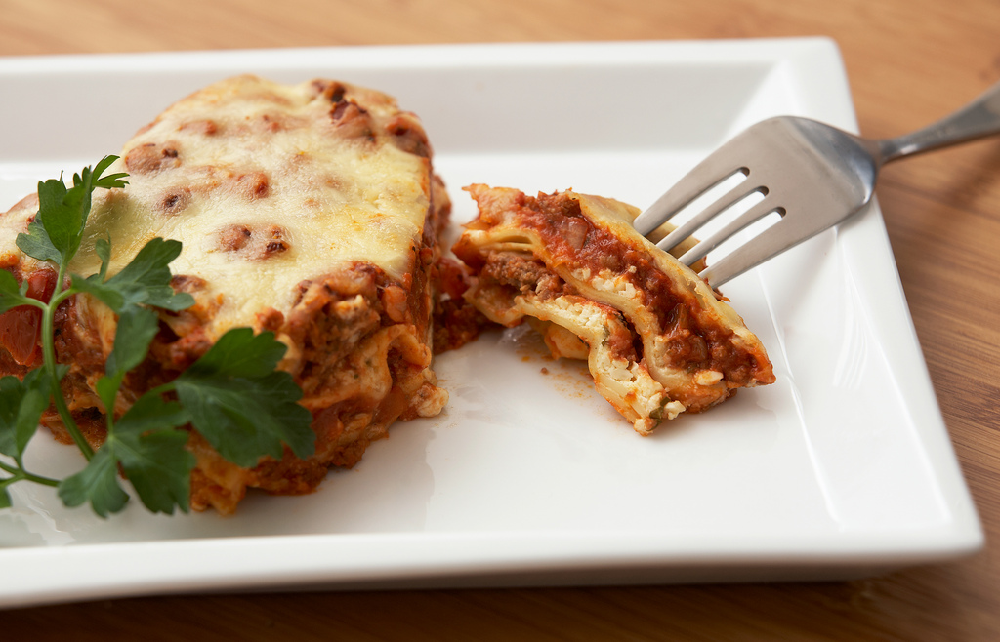

Lasagna

Description
Lasagna is a type of pasta, possibly the most popular in the world. It is made of wide, flat noodles layered with meat and cheese.
It is the ultimate comfort food—a hearty, layered baked pasta dish that's perfect for feeding a crowd or enjoying as leftovers. This recipe starts with a rich, slow-simmered meat sauce made from ground beef, Italian sausage, garlic, onions, and crushed tomatoes, seasoned with oregano and basil. Layered between sheets of tender lasagna noodles is a creamy, dreamy ricotta cheese mixture blended with Parmesan and fresh parsley, all held together by gooey, melted mozzarella. Baked to golden, bubbly perfection, this lasagna emerges from the oven with a cheesy, crispy top and layers of savory, saucy goodness that melt in your mouth. Serve it alongside a crisp green salad and warm garlic bread for a meal that feels like a warm hug on a plate.
Ingredients
- 1 pound ground beef
- 1 pound Italian sausage
- 1 onion, chopped
- 3 cloves garlic, minced
- 1 (28-ounce) can crushed tomatoes
- 2 (6-ounce) cans tomato paste
- 2 (6.5-ounce) cans canned tomato sauce
- 1/2 cup water
- 2 tablespoons white sugar
- 1 teaspoon dried basil leaves
- 1/2 teaspoon fennel seeds
- 1 teaspoon Italian seasoning
- 4 tablespoons chopped fresh parsley
- Salt and pepper to taste
- 12 lasagna noodles
- 16 ounces ricotta cheese
- 1 egg
- 3/4 teaspoon salt
- 3/4 teaspoon ground black pepper
- 3/4 teaspoon dried oregano leaves
- 3/4 teaspoon dried basil leaves
- 3 cups shredded mozzarella cheese
- 3/4 cup grated Parmesan cheese
Steps
- In a large pot over medium heat, cook and stir ground beef, sausage, onion, and garlic until well browned. Stir in crushed tomatoes, tomato paste, tomato sauce, and water. Season with sugar, basil, fennel seeds, Italian seasoning, 2 tablespoons parsley, salt, and pepper. Simmer, covered, for about 1 1/2 hours, stirring occasionally.
- Bring a large pot of lightly salted water to a boil. Cook lasagna noodles in boiling water for 8 to 10 minutes. Drain noodles, and rinse with cold water. In a mixing bowl, combine ricotta cheese with egg, remaining parsley, salt, pepper, oregano, and basil.
- Preheat oven to 375 degrees F (190 degrees C).
- To assemble, spread 1 1/2 cups of meat sauce in the bottom of a 9x13 inch baking dish. Arrange 6 noodles lengthwise over meat sauce. Spread with one half of the ricotta cheese mixture. Top with a third of mozzarella cheese slices. Spoon 1 1/2 cups meat sauce over mozzarella, and sprinkle with 1/4 cup Parmesan cheese. Repeat layers, and top with remaining mozzarella and Parmesan cheese. Cover with foil: to prevent sticking, either spray foil with cooking spray or make sure the foil does not touch the cheese.
- Bake in preheated oven for 25 minutes. Remove foil, and bake an additional 25 minutes. Cool for 15 minutes before serving.
Below is the link back to the index page on this Odin Recipe website
Home